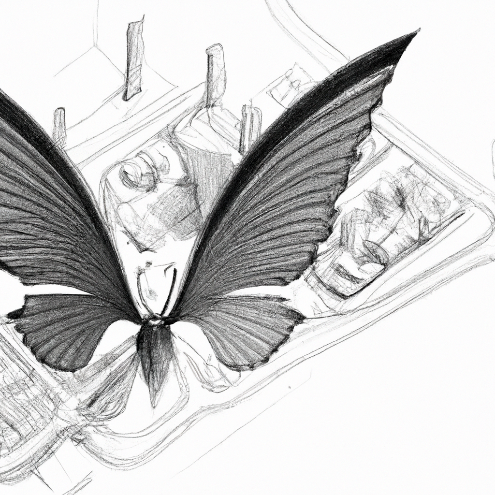
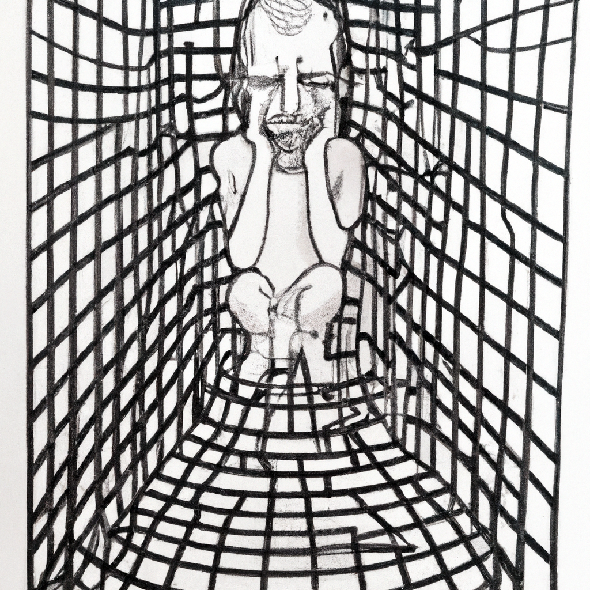
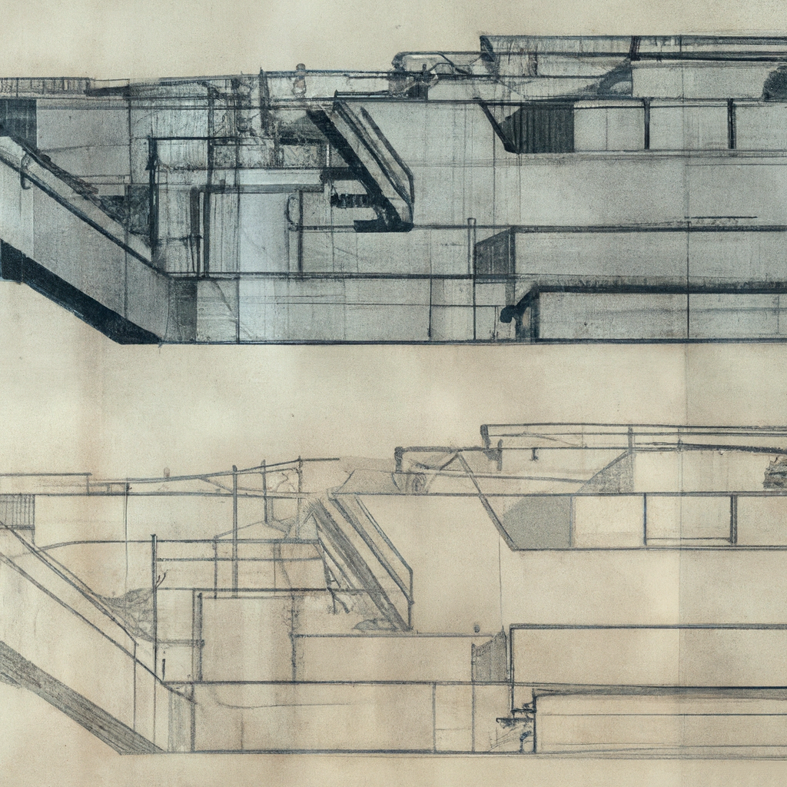
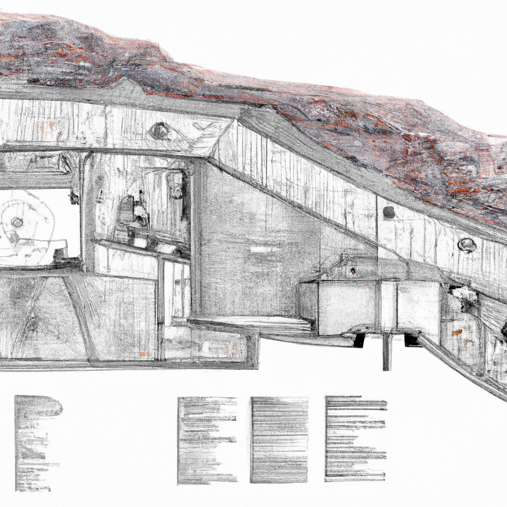

On the Necessity That Does Not See
Notes toward a second facility
There is a version of this argument that begins with hunger, so it should begin there.
A valve opens. Water moves through a channel someone dug, decades ago, before the person standing at the valve was born. The water reaches a field. The field grows grain. The grain feeds a population, some of whom will spend their lives standing at valves, reading gauges, walking the lengths of channels checking for blockages, because someone has to, and there is no one else.
This is not a metaphor for a computer. It is a computer, if you are willing to look at it that way, and the willingness to look at it that way is the entire project.
The first facility asked what a system requires from a body when the system does not need that body at all. The output was a digit, 0 through 9, logged and never reviewed. The horror was the gap between total provision and total indifference. The system fed you, sheltered you, kept you at 25 degrees, and never once asked what you were experiencing, because your experience was not a variable in the function it was computing. You could stop pressing the button and nothing would happen. The majority would absorb your absence. You were cared for and you were not needed, and these two facts sat side by side without friction.
This second facility inverts that. Here, you are needed completely. If you do not open the valve, the field three sections down does not get water, and the grain there fails, and the people who eat that grain (who may include your own children, who may include you) do not eat. There is no majority vote to absorb your failure. There is no redundant block of ten standing behind you. You are load-bearing in the most literal sense the word can have: something rests on you, and if you are not there, it falls.
And still, still, the question of what it is like to be you was never part of the design.

To understand why, it helps to be precise about what kind of thing this colony is, because it is easy to mistake it for something it isn't.
A utopia (in the planning sense, the sense of someone sitting down and asking how should people live) begins from the human. The human is the reference point the whole design answers to. Needs are identified first; arrangements follow from them. Even a failed utopia, even a cruel one, starts there, with a person, and works outward.
This colony was not designed. It accreted. Every part of it exists because, at some point, its absence caused a death, and the colony adjusted. The way a body grows callus where it's repeatedly struck, not because anyone decided calluses were good, but because tissue that doesn't toughen there doesn't survive there. The colony's structure is not an answer to the question how should people live. It's the residue of five thousand years of the much smaller, much colder question: what does the water need, in order to keep moving?
Water needs a channel. A channel needs to be dug, and then walked, and then maintained. Someone must notice when the level drops. Someone must be at the junction when the level drops, to open the right gate. Someone must carry the grain once it's grown. Someone must remember which fields failed in which years, so the gates open differently next time. None of these are needs people have. They are needs the system of moving water and growing grain has, and people are what the system found, lying around, capable of meeting them. A hinge is the available mechanism for a door swinging. A person, standing near a gate, capable of lifting it, is the available mechanism for a gate opening at the right moment. The colony's entire population, looked at this way, is not a society that built infrastructure to serve itself. It is infrastructure that happened to be made of people, because people were what was available, and infrastructure does not ask what it's made of.
This is the separation from utopia planning, and it is total. A utopia might fail the people it was built for. This colony was never built for anyone. It was built (accreted) around a set of operations that had to happen for the water to keep moving and the grain to keep growing, and the operations came first, the way the slot comes before whatever gets put in it. The question what do people need never had to be asked, not because someone forbade it, but because the colony's entire growth was driven by a different question entirely, one that has no human in it at all: what does this operation, at this junction, require to continue happening? The answer was always: something that can sense, decide, lift, carry, remember. People can do all of these. So people are here. That's the whole explanation. It's also the whole horror.
This is the rule the colony runs on, and it is worth stating plainly, the way the first facility's rules were stated plainly, because plainness is where the horror lives.
Somewhere, a level needs to be read and reduced to a signal: low, normal, high. A person does this, watches a gauge, a cloud, a flow, and converts what they see into one of a few words, spoken or marked, that means something to someone else. This is the only kind of input the rest of the system can receive. Everything the watcher actually perceives (the particular grey of the sky, the smell before rain, forty years of knowing what this kind of low usually means versus that kind) all of it is reduced to one of three words, because three words is what the system downstream was built to take.
Somewhere else, that signal arrives at a junction, and a person there applies a rule to it: if upstream is low and downstream is normal, open this gate; otherwise, hold. The rule is not written anywhere as a rule. It was taught, gesture by gesture, the way a grip or a gait is taught, until the person at the junction does it the way their hands learned to do it, the way you don't think about which fingers depress which strings. From inside, this feels like skill, like knowledge, like a craft passed down with love. From the system's side, it is a fixed weight, an instruction that does not update, because nothing in the chain of teaching has ever included the step and reconsider whether this is still correct.
And somewhere further on, the accumulated effect of ten thousand such signals and ten thousand such junctions becomes an amount, this much grain, to this household, this season, decided the way it was decided last season, because the rule for deciding it is the same rule, taught the same way, by people who learned it the same way their teachers did.

That is the computation. Sensing, reduced to signal. Signal, routed by inherited rule. Routing, accumulated into outcome. None of it written down as an algorithm; all of it executed as if it were one, faithfully, for longer than anyone alive can verify. The rule was tuned once, by trial, by failure, by years that didn't work and years that did, centuries ago, under conditions nobody now living has any way to check against the conditions now. Whether it still fits is not a question the rule can ask about itself. A rule doesn't audit its own premises. It just runs.
I think about this in terms of what a child is, here.
In the first facility, children did not really exist. Intake began at twelve, and the document did not ask what those first twelve years had been for. In this facility, childhood is not absent. It is the supply chain. A child here is raised the way a child anywhere is raised when survival depends on inherited skill: you learn to read the gauge because your mother read the gauge, and her mother before her, and the channel has needed someone to read that gauge at that hour for longer than anyone currently alive has been alive. This is not a dystopian invention. This is how most human societies have worked for most of human history. The terrifying part is not that it's unrecognizable. The terrifying part is that it's completely recognizable. When you lay this rule honestly over the architecture of subsistence agriculture, it fits without alteration. The channels were always dendrites. The children training to take over a section of canal were always being trained as a kind of unit. We just never had a reason to say so, because the system worked, after a fashion, and working systems don't get audited for what they're made of.
What this facility does is perform that audit. Here is the input layer: the people whose entire function is to look at a water level and report one of three words, day after day, for a lifetime, training their replacement to do the same. Here is the routing layer: the people standing at the thousand small junctions where one decision sends water one way and not another, applying a rule they were never taught as a rule. Here is the output: distribution, decided this week the way it was decided last week, by something nobody currently alive wrote and nobody currently alive has the standing to question, because questioning it would require a pause, and a pause is a famine.
There's a specific kind of grief in this that's different from the first facility's grief.
The first facility's grief was the grief of being unnecessary, of pressing a button that changes nothing, of being one of ten where nine would do, of existing inside a system that would not notice your absence. That grief has a clean shape. It's the grief of I do not matter.
This facility's grief is the grief of mattering completely and still not being seen. Of being essential, known to be essential, depended upon explicitly, your role load-bearing in the most literal sense, and still having no one, ever, in the whole history of the system, ask what it is like to be the person standing at that junction at four in the morning, alone, for the four-thousandth time, converting what you see into one of three words because three words is what the system takes, training a child to do what you do because there has to be someone, there has always had to be someone, and the system that depends on that someone existing has never once treated "someone" as a category requiring any description beyond present, and capable of reading the gauge.

That's the sentence this facility is built to make legible. Present, and capable of reading the gauge. Everything else (the particular grey of the sky that morning, the forty years of knowing what this kind of low usually means, the child being trained, the cold, the grief that has no object because there's no one to direct it at) none of it is absent because it was denied. It's absent because the rule was never written in a vocabulary that could hold it. The rule takes three words. It was never going to take more, not out of refusal, but because three words was what the junction needed, and the junction is what the rule was built around, and the person is what the junction found.
The valve has a maintenance schedule. The person operating the valve does not, except insofar as the person is also, in this one respect, a kind of valve: something that wears, that trains its replacement before it's worn out, the line of replacements stretching back further than the channel's first working day and forward for as long as the fields need water. Which is to say forever. Which is to say there is no exit condition here either, just like the last facility, except this time the reason no one built an exit condition isn't indifference.
It's that the question of an exit was never the kind of thing a rule about gates and grain levels could contain. Not forbidden. Not unthinkable. Just outside the three words. Always outside the three words.